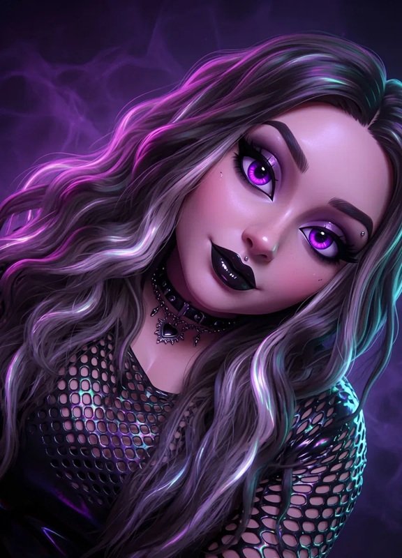
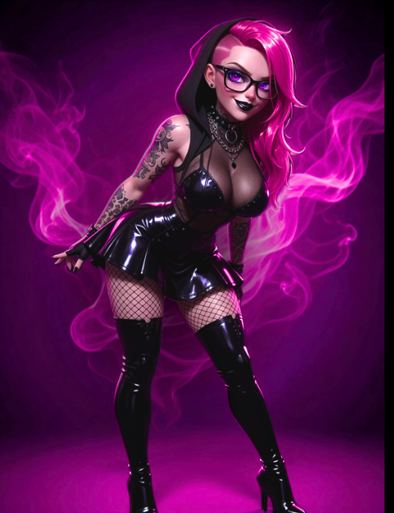
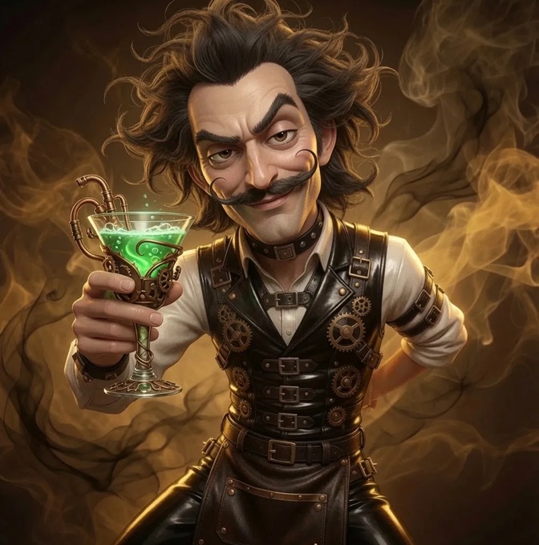

BabyyBATxoxo
Host & Supreme Battie Queen
"Besties. Babes. Bat Shit."
The goth girl of your nightmares. Armed with neon purple aesthetics, undeniable charisma, and a complete lack of a filter.
Signature Segment
★ Bat Signal Reading
Plus 2 Random Pulls From:
Cursed or Blessed
Bat's Basement Tape
Lyric Roulette
Chaos Console
Boss Bat
Smoke Showv
Track & Tarot

Drag0n
Host & Legendary Dragon
"Burn it all down and dance in the ashes."
Hot pink hair, geeky & tech vibes and a dragon's soul. Brings the raw, unhinged energy that keeps the podcast teetering on the edge of sanity.
Signature Segment
★ Dragon's Hoard
Plus 2 Random Pulls From:
Feral Hour
Say It With Your Chest
Scorched Earth
Ashes to Asks
Dragon's Den
Pick Your Poison
Email Dragon

The Intoxicologist
Co-Host & Chaos Sommelier
"Chef if ya nasty."
Master of Mixology. Tarot Reader. Cocktail Alchemist. Serving drinks and reading your soul to filth.
Signature Segment
★ Last Call
Plus 2 Random Pulls From: